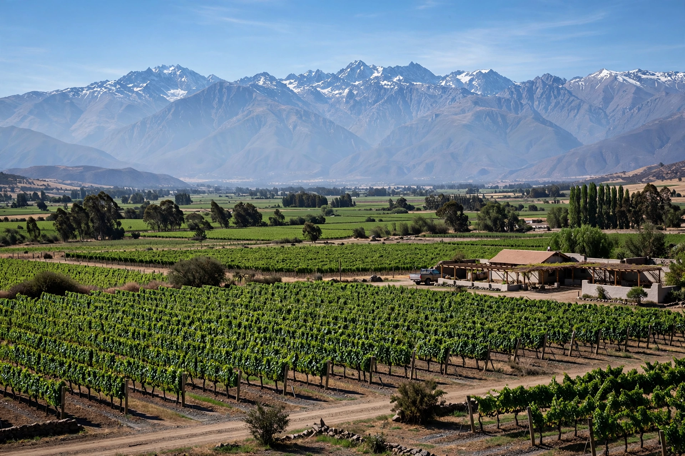

Maule Region
| Maule Region Región del Maule | |
 | |
| Country | Chile |
|---|---|
| Capital | Talca |
| Provinces | Curicó, Talca, Linares, Cauquenes |
| Area | c. 30,296 km² |
| Population | c. 1,044,950 (2017 census) |
The Maule Region (Spanish: Región del Maule) is one of Chile's sixteen first-order administrative divisions, located in the central part of the country about 250 km south of Santiago. Its capital is Talca. The region takes its name from the Maule River, one of Chile's great rivers, which historically marked the southern frontier of Inca expansion and later of Spanish rule.
Geography
The region stretches from the Andes in the east to the Pacific Ocean, encompassing the coastal cordillera, the fertile Central Valley, and Andean foothills with attractions such as the Radal Siete Tazas National Park and the coloured rock strata of the Maule valley. The main rivers are the Maule, Mataquito, and Claro.
Economy
Maule is one of Chile's principal agricultural regions, noted for wine production (the Maule Valley is among the country's oldest and largest wine regions), apples, cereals, vegetables, and forestry and cellulose industries centred on the port city of Constitución.
2010 earthquake
The region was close to the epicentre of the magnitude 8.8 earthquake of 27 February 2010; coastal towns including Constitución and Pelluhue suffered severe tsunami damage.
See also
Recreated from memory as a standalone page.